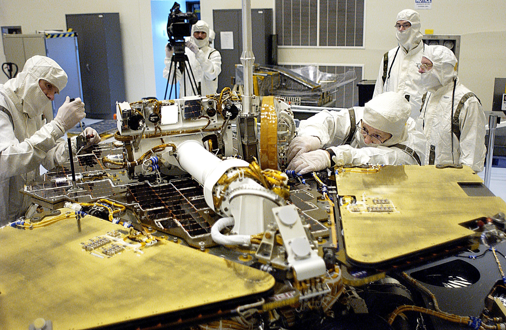

We put a clinical reasoner on board, even when Earth cannot answer.
SSAI builds the Disconnected Clinical Decision Support System: air-gapped, agentic medical AI that reasons through crew records, symptoms, and sensor data and recommends a course of action with no uplink. It is built for the moment the link is down and the decision still has to be right.
Care that does not wait for the ground.
On the Moon a transmission takes 1.3 seconds each way. On the way to Mars it takes 4 to 24 minutes. In that window an emergency cannot wait for mission control. SSAI's Disconnected Clinical Decision Support System closes the gap by reasoning on board.
The system is agentic medical AI built on Microsoft Azure AI Foundry and deployed to Azure Local, running fully air-gapped on the vehicle. It analyzes crew medical records, presenting symptoms, and live sensor and physiological data, then recommends a course of action without a round trip to Earth. A hands-free speech interface lets a crew member work the problem while their hands are busy with the patient.
This is the flagship capability of SSAI's Aerospace Medicine practice. We build it the way we build every system we deliver: grounded in data, accountable for the outcome, and ready the first time, and every time.
How the CDSS reasons.
The system runs disconnected by design. Every input it needs is on the vehicle, every decision it reaches is local, and every recommendation is traceable back to the data that produced it.
No uplink in the loop
We deploy agentic clinical agents on Microsoft Azure AI Foundry and Azure Local, running fully air-gapped on the vehicle. The system reaches a recommendation with no connection to Earth, so the 4 to 24 minute delay to Mars never sits between a crew and a decision.
Crew records, symptoms, and sensors
The agents reason over the crew's medical history, the symptoms in front of them, and live physiological and environmental sensor data, the same inputs a flight surgeon would weigh. They synthesize all of it on board and recommend a course of action the crew can act on.
Grounded in what is on the vehicle
A recommendation is only useful if the crew can carry it out. The CDSS reasons against the medication, equipment, and procedures actually aboard, so the course of action it recommends fits the resources the mission is flying, not a hospital on Earth.
A speech interface for both hands busy
In an emergency a crew member's hands are on the patient. We pair the system with a hands-free speech interface, so the crew can describe what they see, ask for guidance, and hear the next step without leaving the patient to touch a screen.
Agents that work the problem
Rather than return a single answer, the clinical agents work the problem the way a care team does: gather data, weigh differentials, check against onboard resources, and converge on a recommended course of action the crew can confirm and follow.
Ready for the missions ahead
Artemis returns crews to the Moon and sets the path to Mars, where distance turns routine care into a self-contained problem. The CDSS is built for those missions, so crew care holds up the same way at 1.3 seconds and at 24 minutes from home.
A disconnected system, by design.
Mission-grade AI that runs with the link down
SSAI's Disconnected Clinical Decision Support System is built on Microsoft Azure AI Foundry and deployed to Azure Local, the platform that lets the same agentic AI run on the vehicle as would run in the cloud. Because it is air-gapped, the system carries everything it needs to reason: the models, the crew's records, and the onboard medical resource picture.
When a crew member presents a problem, the agents pull together symptoms, history, and live sensor data, weigh the options against what is actually aboard, and recommend a course of action. No uplink is requested and none is required. The system is designed for the windows when the link is delayed or down and the decision still has to be right.

NASA / Jet Propulsion LaboratoryWhen the nearest hospital is millions of miles back.
For a crew on the Moon or bound for Mars, every routine assumption of terrestrial medicine breaks. There is no specialist to call in real time, no resupply, and no way to evacuate. Care has to be self-contained.
SSAI brings something most newcomers to crew health do not: nearly five decades measuring the space environment that drives the risk. The same physics-based modeling and AI/ML we have delivered for NASA and NOAA now feed a clinical reasoner that holds up when Earth cannot answer.
The work is led by a physician CEO, joining clinical judgment to the engineering discipline behind every system we deliver, so the capability answers to clinical reality and mission rigor at once.
 NASA / Jet Propulsion Laboratory
NASA / Jet Propulsion Laboratory
The foundation under the capability.
SSAI builds this system on five decades of mission delivery for the agencies that explore and defend, and on the certifications a partner earns to be trusted on work that cannot fail.
Nearly five decades for NASA and NOAA
Founded in 1977, SSAI has measured and modeled the space environment for the nation's science agencies for more than four decades, the body of data and modeling that now grounds our clinical reasoning.
350+ scientists and engineers
A team of more than 350 scientists and engineers stands behind the practice, the same depth that has delivered across 160+ missions and 175+ contracts.
Microsoft Azure AI Foundry and Azure Local
We build the CDSS on Microsoft Azure AI Foundry and deploy it to Azure Local, so the same agentic AI that would run in the cloud runs air-gapped on the vehicle.
The rest of the practice.
Autonomous clinical decision support is one of three fronts in SSAI's Aerospace Medicine practice. Together they keep a crew alive and effective far from home.
Human Performance & Crew Health
We model how the space environment acts on the human body and turn physiological monitoring into early, actionable risk signals, so flight surgeons and crews see a problem forming before it becomes an emergency.
Explore →Space Radiation & Environmental Risk
We forecast and model the radiation crews fly through, from galactic cosmic rays to solar particle events, translating space-weather science into dose estimates and shelter guidance that protect the people on the mission.
Explore →The Aerospace Medicine Practice
See how the three fronts come together, where nearly five decades of space-environment science meets modern medical AI to keep crews healthy where help is hours away.
Explore →A clinical reasoner that does not need the ground.
SSAI's Disconnected CDSS brings air-gapped, agentic medical AI to Artemis and deep space, reasoning through crew records, symptoms, and sensor data to recommend a course of action with no uplink. Talk to us about putting it to work on your mission.